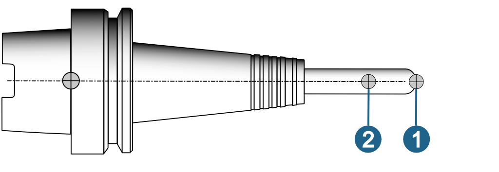
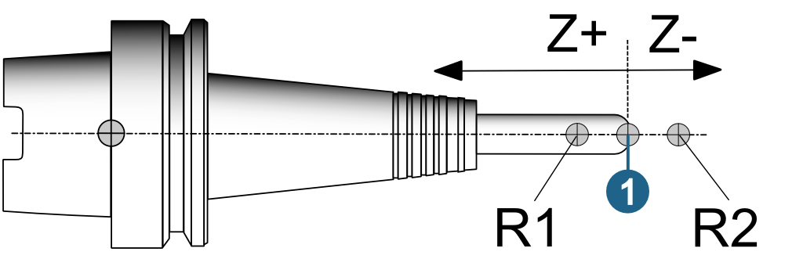
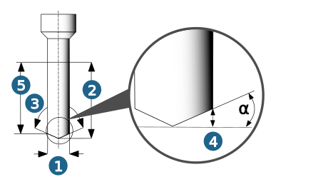
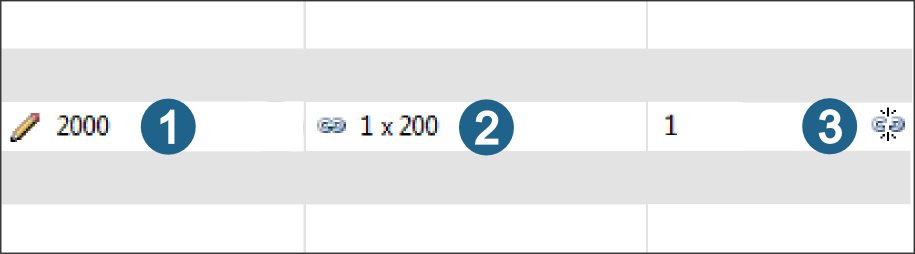

Technology parameters
To define technology parameters, switch to the Technology tab of the data view.
If Spindle RPM (n) and Feedrates have been defined for a material, they can be overwritten in the data view of the NC tool and, if necessary, modified through the use of factors.
Tool reference: Either Tip or Center can be set as the tool reference for the ball mill, bullnose end mill, lollipop, woodruff, lens cutter and barrel tool types.
Tip (1): Z positions in the NC program are relative to the tool tip.
center (2): Z positions in the NC program are relative to the tool's center point.
|  |
Reference points: Available for T-Slot Cutter, Drill Tool, Tap and Boring Bar tool types. Any number of reference points can be defined. Define Name and Position of the reference point.
|
Example: |
The value for the position of the reference point is based on the tool reference (1). R1 Position = 2, R2 Position = -2. A negative value for the reference point means that this point is moved two units in a negative direction on the Z axis. At the same time, the clearance plane is aligned accordingly. An offset of 0 corresponds to the tool reference. |
|  |
The tool reference must match the tool's measuring system and applies to all 5X and 3D jobs in a job list.
Factor speed / Factor feedrate: The parameters can be defined irrespective of the material and they are multiplied by the Spindle RPM (n) / Feedrate values.
Note
The Factor speed parameter is also applied to the Cutting speed (Vc) during turning.
Infeed width (ae) factor: Factor on the width of the tool tip used for cutting
Infeed length (ap) factor: Factor on the length of the cutting edge used for machining.
Maximal spindle RPM / Maximal feedrate: Limitation of spindle RPM and feedrate.
Factor values and Maximal spindle RPM / Maximal feedrate apply to the components Holder and Extension. Factor values are also applied to feedrates in the cutting profile if the feedrate unit is set to mm/rev or inch/rev.
5X comp. length: Linear offset as a result of rotating the tool. The distance from the tool reference point to the pivot point is normally composed of a tool-independent and a tool-specific part (comp. length).
Usable length: The following applies to drilling tools: Usable length = Cutting length - Tip length. The following applies to tap drills: Usable length = Cutting length - Lead in length. The value can be modified later on.
The following apples to all other tool types: The Usable length (5) is determined based on the Tool diameter (1), Tip length (2), Tip angle (3) and Section (4) parameters. Tip angle (3) and Lead in length (4) are calculated based on factor values.
For milling tools the following also applies: Usable length = Tip length.
If the tool reach is lower than the tip length, the usable length corresponds to the cutting length.
|  |
|
Tip angle (3) |
Tip length / Lead in length (4) |
|
80° |
0.6 * D (Tool diameter) |
|
118° |
0.3 * D (Tool diameter) |
|
130° |
0.23 * D (Tool diameter) |
|
140° |
0.18 * D (Tool diameter) |
NC tool length: tool length + holder length.
The technology values for the cutting edges and spindle orientation are taken from the selected tool.
Material: Material and usage are displayed if they are linked with the selected cutter material. The material and usage are then taken from the selected tool.
Note
Spindle RPM (n), Feedrate XY, Axial feedrate, Feedrate reduced, Coolant, Infeed width (ae), Infeed length (ap) and Plunge angle are defined for the tool. The values are material-dependent and can be directly overwritten for the NC tool.
To overwrite the parameters, click the corresponding input field (1). If the value is linked (2), click the input field and then click the icon (3) to break the link. Enter the required value.
|  |
Meaning of the icons
|
Value is linked with tool. |
|
|
|
Unlink. |
|
|
|
Value has been overwritten for the NC tool. |
|
|
|
A formula is used to define a value for the tool. |